PERSONAL COACHING · ALMERE
Rutger
Laten we kennismaken.
Ik ben Rutger, de persoon achter Beck In The Gym. Persoonlijke begeleiding bij krachttraining, techniek en jouw volgende stap in de gym.
Vraag een kennismakingsgesprek aanDe directe contactgegevens worden nog toegevoegd. Je kunt het kennismakingsformulier gebruiken zodra het beschikbaar is.